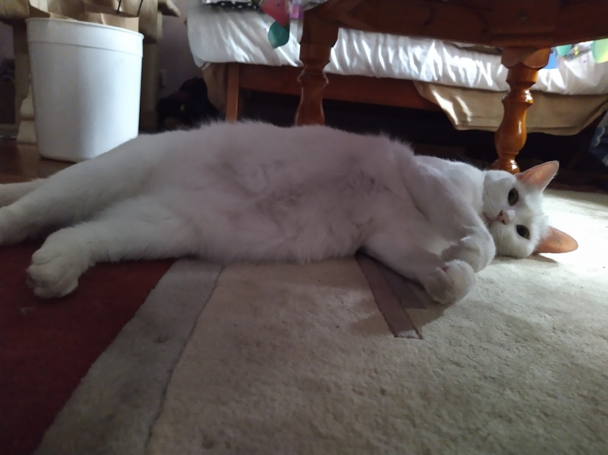

animation source: Shake Art Deluxe, Newgrounds, studioNOKOI
Student Number:s3916911 Student Email:s3916911@student.rmit.edu.au
My name is Elliot Chhin, student number s3916911, s3916911@student.rmit.edu.au. I was born here in Victoria but my parents are Cambodian. I don’t follow any religions. I graduated highschool in 2020 and I primarily speak English. I can speak a little of Khmer, Cambodia’s native language, however I sound like a badly translated movie dub.
I have a white cat named Civi who we rescued as a kitten from our garden 2 years ago where she was skinny, filthy, flea and parasite ridden, and sunburnt. Nowadays she’s a chubby, spoiled cat who always wants to go out on walks. I also have a fishpond with a whole bunch of goldfish swimming around.
In my freetime I enjoy playing video games of which are, but not limited to fps games, indie’s, rogue likes and RPG’s. The problem though is that games are a huge time sink and nothing productive gets done, so I’ve been weaning myself off of them and replacing the time spent with drawing instead.
Click on the image to see more pictures of Civi!
The most appealing thing to me in IT has to be the more graphical aspect of things. Although I have absolutely no expertise in it, 3D modeling interests me greatly. Whether it’s creating characters for video games or to make designs for 3D printing, having the ability to create as an avenue into artistic creativity seems like the most fun and fulfilling thing to do. Of course it is not without having extensive knowledge in the field to be able to succeed. Designing graphical interfaces or to make websites pretty and efficient to use is also another interest of mine. This interest in this side of IT probably stems in early highschool where I’d pay particular interest in how games work behind the scenes, and wondering the processes behind it.
I guess I’ve come to RMIT to study because it is one of the better options, compared to the other university institutions. The facilities on campus are quite nice, boasting gigantic buildings with classrooms kitted with quality equipment. The institution has a great principle of respect, paying respects to the aboriginals who once lived on this land, as well as respecting other cultures and genders.
What I hope to learn during my time in this program are the core skills in computer skills, basic knowledge that serves as the framework that will allow me to expand and branch out into the more specialist fields, such as software development, Data Science or Business Analyst. I’m also hoping that it’ll also pave the way into new hobbies for me, such as enjoying computer work and 3D modeling or game development.
This job posting offers the position of a software developer, particularly in developing softwares for businesses and stakeholders that will provide the infrastructure for their systems. These systems are most likely data and information systems where database management systems would need to be implemented. This isn’t my absolute final preference for my most ideal job, but it provides a good starting point for a career choice when I am finished with my studies. What appeals to me in this job is that they’re hiring fresh graduates, which should be very easy to get accepted in. Developing softwares for businesses would also help to build my expertise and provide skills to put into my portfolio, to then be hireable for higher paying positions at more prestigious companies.
The job listing states that it is looking for people fresh out of university, ie. they’ve finished their computer science programs or other similar programs. As they’re hiring software developers, this requires a skill set pertaining to software development, unsurprisingly. This would include programming skills and knowing how to use a range of programming languages such as Python, Java or C++, to name a few. Database systems will need to be implemented, so knowing how to operate database management systems will be of importance. Related to this, data science is a field that would be required as we will most likely be working with business analysts.
My current skills are, to say the least, very lacking. I have a very basic introductory skill set in Python, and am currently in the process of learning how to build an HTML website. I know a little about UX design, but not color theory though. I don’t have any qualifications or experience pertaining to computer science.
In order to actually be hireable, I need to garner all of these skill sets required to become a software developer. This will primarily be accomplished by simply being enrolled in this current program, Computer Science, and graduating from it. Along the way, I most likely will be developing my own mock softwares as practice to build on the necessary knowledge. I’ll also learn how to effectively design software designs, utilizing design principles to create an attractive and efficient design.
Link to Learning style test results
Score = 47
Looking at the results of the Myers-Briggs test is quite worrisome to me. I am a very introverted person, but that’s something that I already know. This would mean that my preferred working environment would be in a quiet, isolated area, which is true to some extent. However I have been finding solace in working in groups, as I’ve been finding that talking with other people, sharing ideas and just plain old banter is very fulfilling and allows for more creative juices to flow. The results of my “energy” and “nature” levels are quite moderate. Not much to comment on there. Apparently I am quite prospective, meaning I am quite opportunist and like to lay low for a perfect option to pass by. I am not a fan of this trait though as it also means, to me, that I am quite docile in my decision making, too docile. I am terrible with deciding things and having to make important decisions is quite anxiety-inducing. This is a good indication of an area I need to work on to improve myself on how I tackle day-to-day tasks and decision making. The last trait lists me as turbulent, which I fully agree with. I am very self conscious to the point where it becomes detrimental to my well being and social life. This is an important area for me to work on as it would improve my attitude to daily life as well as work flow, making me more productive.
These results seem to indicate that I wouldn’t perform extremely well in a team-oriented environment. Communication is vital, and I am quite reclusive in nature so this area would be lacking. Making decisions and directing the course of the project requires great decision making and discipline, which I am also lacking in. Otherwise, in all the other areas such as typing up ideas and completing my portion of the project should be of a standard pace.
Obviously if I want to succeed in working in a group, I need to greatly improve my work attitude and be a much more outgoing person. Talking and sharing ideas is important. I do see the merit in doing this though, and it is very rewarding to talk with other people and share our brain power. I’m hoping that I can work on myself in the areas of the test results to better myself and to be of actual value to my team members.